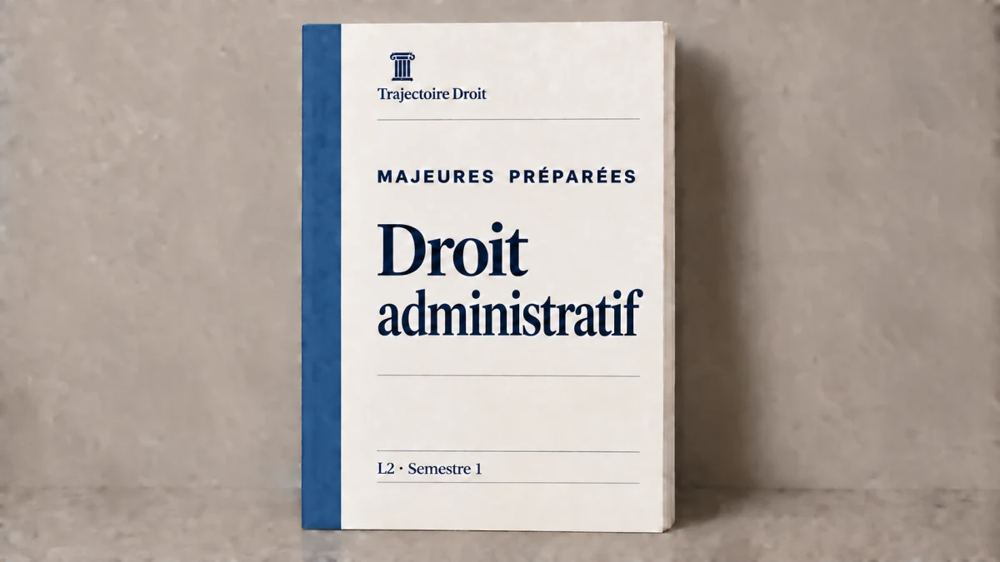

L'arrêt Morsang-sur-Orge expliqué simplement
L'arrêt Morsang-sur-Orge est rendu le 27 octobre 1995 par le Conseil d'État, réuni dans sa formation la plus solennelle, l'Assemblée du contentieux. L'ordre public, c'est l'ensemble des exigences que le maire protège par ses mesures de police. L'arrêt juge que le respect de la dignité de la personne humaine fait partie de l'ordre public. Un maire peut donc interdire une activité qui porte atteinte à cette dignité, même sans circonstances locales particulières et même quand la personne concernée accepte librement d'y participer.


Droit administratif L2 S2
Réviser toute la matière de cet arrêt avant les partiels
Les majeures préparées réunissent les règles du semestre, déjà rédigées condition par condition comme au début d'un cas pratique. La fiche complète reprend tout le cours du semestre, avec les grands arrêts expliqués et ce qu'ils changent pour la règle. Ce sont les deux supports que les étudiants achètent le plus sur le site.
Que dit l'arrêt Morsang-sur-Orge ?
Dans l'arrêt Morsang-sur-Orge du 27 octobre 1995, le Conseil d'État, réuni en Assemblée du contentieux, juge que le respect de la dignité de la personne humaine fait partie de l'ordre public.
Une autorité de police municipale peut donc interdire une activité qui y porte atteinte, même en l'absence de circonstances locales particulières. Elle peut aussi l'interdire quand la personne visée accepte librement de participer à cette activité.
Avant Morsang-sur-Orge, l'ordre public administratif reposait sur trois éléments matériels, à savoir la sécurité et la tranquillité publiques, ainsi que la salubrité publique, autrement dit l'hygiène. En 1959, l'arrêt Films Lutétia y avait déjà ajouté la moralité publique, mais seulement en présence de circonstances locales particulières. Morsang-sur-Orge ajoute ensuite une quatrième composante, la dignité de la personne humaine. À la différence de la moralité publique, cette composante s'applique même sans circonstances locales, et même contre la volonté de la personne protégée.
Le maire de Morsang-sur-Orge interdit par arrêté un spectacle de « lancer de nain » prévu le jour même dans une discothèque de la ville.
Le tribunal administratif de Versailles annule cet arrêté et condamne la commune à indemniser la société organisatrice et l'artiste.
Le Conseil d'État annule ce jugement et valide l'interdiction, car la dignité de la personne humaine fait partie de l'ordre public.
La dignité humaine devient la quatrième composante de l'ordre public. Le juge l'invoque depuis, par exemple contre un spectacle de Dieudonné en 2014, mais il vérifie toujours que l'interdiction reste justifiée.

Fiche complète
Droit des personnes L1
Les faits, un spectacle de lancer de nain interdit
En 1991, la société Fun Production organise dans des discothèques un spectacle appelé « lancer de nain ». Des spectateurs sont ainsi invités à projeter le plus loin possible, sur un tapis de réception, une personne de petite taille, équipée de protections. L'artiste, M. Manuel Wackenheim, est atteint de nanisme, et il se prête à ce numéro contre rémunération. D'ailleurs, devant le Comité des droits de l'homme des Nations unies, il a plus tard expliqué qu'il y voyait un métier comme un autre, l'un des rares qui lui permettait de gagner sa vie.
Le spectacle est prévu le 25 octobre 1991 à l'Embassy Club, une discothèque de Morsang-sur-Orge, dans l'Essonne. Or, le jour même, le maire prend un arrêté qui l'interdit. Il s'appuie pour cela sur l'article L. 131-2 du code des communes, qui confie à la police municipale le soin d'assurer « le bon ordre, la sûreté, la sécurité et la salubrité publique ». Une mesure de police administrative, c'est une décision qui limite une liberté pour prévenir un trouble à l'ordre public. Juridiquement, cet arrêté est donc une mesure de police administrative.
L'interdiction prive la société de son spectacle et l'artiste de la rémunération prévue pour ce numéro. Rien n'indique en revanche un désordre particulier dans la commune ce jour-là, comme une bagarre ou une manifestation devant la discothèque. Le maire fonde donc son arrêté sur l'atteinte que le spectacle porte, selon lui, à la dignité de la personne humaine. La société Fun Production et M. Wackenheim veulent obtenir l'annulation de cet arrêté et une indemnité pour le préjudice qu'il leur cause.
La procédure, le tribunal administratif donne d'abord raison à l'organisateur
La société Fun Production et M. Wackenheim saisissent le tribunal administratif de Versailles. Par un jugement du 25 février 1992, le tribunal annule l'arrêté du maire. Des circonstances locales particulières, c'est une situation propre à la commune qui rend l'interdiction nécessaire. Selon le tribunal, même à supposer que le spectacle porte atteinte à la dignité humaine, le maire ne pouvait l'interdire qu'en présence de circonstances locales particulières. Or aucune circonstance de ce type n'existait à Morsang-sur-Orge. Le tribunal condamne donc aussi la commune à verser 10 000 francs à la société et à l'artiste, en réparation du préjudice causé par l'arrêté.
On retrouve là le raisonnement classique des mesures de police. Depuis l'arrêt Benjamin de 1933, la liberté reste la règle et l'interdiction l'exception. De plus, l'arrêt Société des films Lutétia de 1959 admettait une interdiction fondée sur la moralité publique seulement en présence de circonstances locales.
La commune fait appel devant le Conseil d'État par une requête enregistrée le 24 avril 1992. Elle demande l'annulation du jugement, ainsi que 10 000 francs au titre de ses frais de procédure. La société et l'artiste forment de leur côté un appel incident, par lequel ils contestent à leur tour le jugement pour obtenir une indemnité plus élevée.
L'affaire est jugée par l'Assemblée du contentieux, la formation la plus solennelle du Conseil d'État. Le commissaire du gouvernement s'appelle aujourd'hui le rapporteur public, et il est chargé de proposer une solution en toute indépendance. Mlle Laigneau, maître des requêtes, présente le rapport, puis le commissaire du gouvernement Patrick Frydman prononce ses conclusions. Le Conseil d'État rend alors sa décision le 27 octobre 1995, le même jour qu'un arrêt Ville d'Aix-en-Provence sur le même spectacle.
Les arguments des parties, la dignité ou la liberté du spectacle
La commune de Morsang-sur-Orge, qui fait appel, soutient que le tribunal s'est trompé en exigeant des circonstances locales. Pour elle, le spectacle porte atteinte à la dignité de la personne humaine, et cette atteinte suffit à justifier l'interdiction prise sur le fondement de l'article L. 131-2 du code des communes. Le jugement doit donc être annulé, ainsi que la condamnation à verser 10 000 francs. La commune soulevait aussi d'autres arguments, que le Conseil d'État n'a pas eu besoin d'examiner.
La société Fun Production et M. Wackenheim défendent le jugement. Ils invoquent d'abord la liberté du travail et la liberté du commerce et de l'industrie. Le spectacle est une activité licite, que la loi permet. L'artiste l'exerce de son plein gré et contre rémunération, avec des protections qui assurent sa sécurité. Selon eux, une mesure de police qui interdit une activité licite doit donc reposer sur un trouble réel. Or la commune ne prouve aucun trouble de ce genre.
Ils soutiennent ensuite que l'arrêté manque de base légale, faute de texte qui permette de l'adopter. Selon eux, l'article 3 de la Convention européenne des droits de l'homme, qui interdit les traitements inhumains ou dégradants, ne pouvait pas fonder l'interdiction. Une circulaire du ministre de l'intérieur du 27 novembre 1991 ne le pouvait pas davantage, car elle date d'après l'arrêté. Par leur appel incident, ils demandent aussi une indemnité plus élevée que les 10 000 francs accordés par le tribunal. Enfin, ils demandent que la commune soit condamnée à une amende pour recours abusif et qu'elle leur rembourse leurs frais de procédure.
Le problème de droit
Le Conseil d'État doit trancher une question restée ouverte jusque-là. La dignité de la personne humaine peut-elle, à elle seule, permettre à une autorité de police municipale d'interdire une activité, même en l'absence de tout trouble local particulier et même quand la personne directement concernée y consent librement ?
La difficulté tenait à la nature de l'ordre public administratif. En effet, jusque-là, une interdiction de police devait toujours se justifier par un trouble matériel et localisé, par exemple un attroupement, un risque d'accident ou une nuisance sonore.
Le Conseil d'État devait donc dire si une atteinte purement morale à la dignité humaine, sans aucun trouble matériel constaté sur place, suffit à fonder une interdiction. Il devait aussi dire s'il fallait tenir compte du choix de la personne concernée, qui avait accepté librement, et contre rémunération, de se prêter à cette activité.
La solution du Conseil d'État
Le Conseil d'État annule le jugement du tribunal administratif de Versailles et rejette les demandes de la société Fun Production et de M. Wackenheim. L'arrêté du maire de Morsang-sur-Orge, qui interdisait le spectacle, est donc validé.
Le considérant de principe
« Considérant qu'il appartient à l'autorité investie du pouvoir de police municipale de prendre toute mesure pour prévenir une atteinte à l'ordre public ; que le respect de la dignité de la personne humaine est une des composantes de l'ordre public ; que l'autorité investie du pouvoir de police municipale peut, même en l'absence de circonstances locales particulières, interdire une attraction qui porte atteinte au respect de la dignité de la personne humaine. »CE, Ass., 27 octobre 1995, Commune de Morsang-sur-Orge, n° 136727
Le Conseil d'État applique ensuite ce principe aux faits. Il relève que le lancer de nain « conduit à utiliser comme un projectile une personne affectée d'un handicap physique et présentée comme telle ». Pour lui, ce spectacle porte donc atteinte à la dignité humaine par sa nature même, quelles que soient les mesures de sécurité prises et même si l'intéressé est d'accord.
Comme l'appel lui transmet tout le litige, le Conseil d'État examine aussi les autres arguments des requérants, appelés moyens, et il les écarte. Le maire peut ainsi interdire une activité licite malgré la liberté du travail et la liberté du commerce et de l'industrie, à condition que cette interdiction soit la seule mesure capable de prévenir le trouble. Vu la nature de l'attraction, cette condition est remplie. Un moyen inopérant est un argument sans effet sur la solution. Enfin, le moyen tiré de l'article 3 de la Convention européenne et de la circulaire de 1991 est inopérant, puisque l'article L. 131-2 du code des communes suffisait à fonder l'arrêté.
Le tribunal administratif avait aussi condamné la commune à verser 10 000 francs de dommages-intérêts à la société et à l'artiste. La société et l'artiste avaient formé un appel incident pour réclamer davantage. Le Conseil d'État rejette cet appel par voie de conséquence, puisque l'arrêté est légal, et il juge irrecevable leur demande d'amende pour recours abusif.
La condamnation de la commune disparaît avec le jugement annulé. C'est désormais Fun Production qui doit verser 10 000 francs à la commune. Cette somme rembourse les frais de procédure de la commune, alors que la première condamnation réparait un préjudice.
Tu révises ton droit des personnes ?
Le guide « Réviser le droit sans s'épuiser » est offert. Il part de ton environnement de travail et va jusqu'à la copie du jour de l'examen, avec la méthode que mes élèves appliquent pour retenir les grands arrêts dans la durée.
Pourquoi le consentement de la personne ne change-t-il rien ?
La dignité protégée par cette jurisprudence appartient à la personne humaine en général. Elle est donc indisponible, ce qui veut dire que personne ne peut y renoncer, alors que chacun peut renoncer librement à un simple intérêt personnel. Le spectacle y porte atteinte parce qu'il traite une personne comme un objet que des spectateurs lancent le plus loin possible.
Le Conseil d'État raisonne comme si la personne ne pouvait pas disposer librement de cette part de sa dignité. Une valeur patrimoniale, c'est une valeur en argent. Le Code civil applique d'ailleurs la même logique au corps humain, puisque l'article 16-5 déclare nulle toute convention qui donne au corps humain une valeur patrimoniale, y compris quand l'intéressé est d'accord.
C'est pourquoi l'arrêt précise que l'interdiction reste valable « alors même que des mesures de protection avaient été prises pour assurer la sécurité de la personne en cause et que celle-ci se prêtait librement à cette exhibition, contre rémunération ».
La même logique explique que l'exigence de dignité ne dépende pas des circonstances locales. La moralité publique, retenue en 1959 par l'arrêt Société des films Lutétia, varie au contraire d'une commune à l'autre, et le maire doit prouver un contexte local pour l'invoquer. En revanche, le Conseil d'État présente la dignité humaine comme une exigence identique dans toutes les communes.
Le Conseil d'État applique encore cette règle sur le consentement, comme le montre une décision de 2026. Le préfet de police de Paris avait fermé en janvier 2026 un établissement où des soirées payantes mettaient en scène des agressions et des violences contre des femmes. Le juge des référés du tribunal administratif avait suspendu cette fermeture, parce que l'organisation permettait aux participantes de donner leur accord et d'arrêter à tout moment. Dans sa décision du 15 juillet 2026, Société Z Machine, le Conseil d'État juge cette raison insuffisante pour justifier la suspension de la fermeture. Le juge doit chercher si l'activité elle-même porte atteinte à la dignité par la façon dont elle traite ces femmes, y compris quand elles ont accepté la mise en scène. Leur consentement reste donc sans effet, y compris sans rémunération, alors que l'homme lancé à Morsang-sur-Orge était payé.
La portée, de Films Lutétia à l'affaire Dieudonné
Un peu plus d'un an avant Morsang-sur-Orge, le Conseil constitutionnel avait reconnu une valeur constitutionnelle à la sauvegarde de la dignité de la personne humaine contre toute forme d'asservissement et de dégradation. Il l'avait tirée du préambule de 1946, dans sa décision du 27 juillet 1994 sur les lois de bioéthique. Le Conseil d'État reprend donc cette exigence l'année suivante et l'applique à la police administrative.
Il faut ensuite comparer l'arrêt aux deux décisions qui organisent le contrôle des mesures de police. L'arrêt Benjamin de 1933 fait de la liberté le principe et de la police l'exception, si bien que toute interdiction doit rester proportionnée aux circonstances locales. Elle ne doit donc pas aller plus loin que ce que la situation de la commune exige.
L'arrêt Société des films Lutétia, en 1959, fait déjà entrer la moralité publique dans l'ordre public, mais seulement quand des circonstances locales le justifient. Morsang-sur-Orge va plus loin, puisqu'il admet qu'une interdiction fondée sur la seule dignité humaine se passe de toute circonstance locale. Il crée ainsi une exception au contrôle classique de proportionnalité.
Dans les années qui suivent, le juge l'applique pourtant très peu. La doctrine, ce sont les professeurs de droit qui commentent les décisions. Une partie de la doctrine y voit alors un arrêt de circonstance. Selon ces auteurs, un fait divers spectaculaire l'a provoqué, et l'administration ne l'a presque jamais appliqué ensuite. Le juge s'en sert de nouveau seulement à propos d'une affaire bien différente du lancer de nain.
En 2006, l'association Solidarité des Français organise dans plusieurs villes des distributions de soupe contenant du porc, ce qui exclut dans les faits les sans-abri de confession musulmane ou juive, à qui elle est refusée. Le préfet de police de Paris interdit ces distributions par un arrêté.
Le juge des référés du Conseil d'État, qui statue en urgence, confirme cette interdiction. Il juge en effet que la distribution, parce qu'elle est discriminatoire, porte atteinte à la dignité des personnes qu'elle exclut. Il retient aussi un risque de troubles, car d'autres associations manifestaient contre ces distributions.
Cette ordonnance du 5 janvier 2007 utilise ainsi de nouveau la dignité humaine, douze ans après Morsang-sur-Orge. Le juge l'associe pourtant à un risque de troubles matériels, alors qu'à Morsang-sur-Orge la dignité suffisait à elle seule.
Le Conseil d'État reprend ensuite ce raisonnement dans l'ordonnance du 9 janvier 2014, rendue dans l'affaire Dieudonné M'Bala M'Bala. Dans la matinée, le tribunal administratif de Nantes avait suspendu l'arrêté préfectoral qui interdisait le spectacle prévu le soir même, et le juge des référés du Conseil d'État est alors saisi en urgence.
Il annule cette suspension et rétablit l'interdiction, en reprenant explicitement le raisonnement de Morsang-sur-Orge. La dignité humaine justifie donc de nouveau une mesure de police préventive, mais le juge vérifie toujours que le risque d'atteinte est réel et que l'interdiction reste proportionnée.
La différence avec 1995 tient à la personne que la dignité protège. En effet, à Morsang-sur-Orge, elle protégeait l'homme lancé, y compris contre son propre choix. En 2014, elle protège au contraire le public et les valeurs de la République contre des propos que l'artiste tient lui-même. De plus, le préfet invoquait un climat de forte tension, si bien que le juge combine de nouveau la défense de ces valeurs et le risque de troubles matériels.
L'affaire dite du burkini donne lieu à une ordonnance du 26 août 2016. Le Conseil d'État y examine un arrêté du maire de Villeneuve-Loubet qui interdisait certaines tenues de bain au nom des bonnes mœurs et de la laïcité. Il suspend cette fois l'interdiction, car aucun risque avéré de trouble à l'ordre public n'existait sur les plages de la commune. Selon lui, l'émotion suscitée par les attentats de Nice ne suffisait pas, à elle seule, à la justifier. Le maire n'invoquait d'ailleurs pas la dignité humaine, ce qui explique en partie la différence avec l'affaire Dieudonné.
Le juge exige aussi que le risque soit actuel. En effet, dans une ordonnance du 1er mars 2025, le préfet de police avait interdit un nouveau spectacle de Dieudonné M'Bala M'Bala en invoquant ses condamnations passées. L'artiste avait pourtant produit le texte de son spectacle et s'était engagé à le respecter. Le juge des référés du Conseil d'État estime donc que ces condamnations passées ne suffisent pas à établir un risque actuel, et il maintient la suspension de l'interdiction.
Le juge continue donc de vérifier, au cas par cas, la réalité du trouble et la proportionnalité de la mesure, quel que soit le fondement invoqué par l'autorité de police.
Au niveau international, M. Wackenheim a porté son propre litige devant le Comité des droits de l'homme des Nations unies. Dans sa décision du 15 juillet 2002, rendue sur la communication n° 854/1999, le Comité rejette sa requête, car il juge l'interdiction non discriminatoire et la considère comme nécessaire et proportionnée.
La critique, entre protection objective et paternalisme
Le risque d'un usage trop large de la dignité apparaît dès 1995. En effet, dans ses conclusions publiées à la Revue française de droit administratif, le commissaire du gouvernement Patrick Frydman mettait en garde contre un retour à un contrôle moral déguisé. Il craignait que la dignité serve de prétexte pour interdire ce qui paraît simplement immoral.
Selon lui, si le maire peut interdire une activité au seul motif qu'elle heurte la dignité humaine, alors une autorité locale pourrait interdire n'importe quelle activité qu'elle juge indigne, sans jamais avoir à démontrer un trouble matériel réel.
Une partie de la doctrine qualifie d'ailleurs encore aujourd'hui la dignité humaine de notion à tout faire, capable de justifier une interdiction aussi bien qu'un refus d'interdire selon les cas.
En 2014, l'affaire Dieudonné montre ainsi la dignité utilisée pour rétablir une interdiction. Deux ans plus tard, dans l'affaire du burkini, le juge exige au contraire la preuve d'un trouble réel, parce que le maire invoquait les bonnes mœurs, une notion voisine. La dignité permet donc d'interdire, alors que les bonnes mœurs ne suffisent pas sans un trouble prouvé.
Le juge administratif doit alors décider lui-même ce qui constitue une atteinte à la dignité humaine. Cette appréciation touche à des choix de société et va bien au-delà de l'application d'un texte.
Le paternalisme, c'est l'attitude d'une autorité qui décide à la place d'un adulte de ce qui est bon pour lui. Une partie de la doctrine reproche à cette jurisprudence une forme de paternalisme. En effet, en écartant le consentement de M. Wackenheim, le juge administratif protège l'individu contre lui-même, alors même que l'intéressé revendiquait ce numéro comme un métier choisi et rémunéré.
Cette critique repose sur une conception libérale de la liberté personnelle. D'après cette conception, chaque adulte devrait pouvoir décider librement de l'usage de son corps et de son image. Il peut ainsi accepter une activité que d'autres jugent dégradante, dès lors qu'il y consent en connaissant les conséquences.
La notion de dignité est aussi critiquée pour son imprécision, car le juge l'utilise sans définition stable. Personne ne sait donc exactement ce qu'elle permet d'interdire. Par exemple, dix-huit ans après Morsang-sur-Orge, la même notion sert dans l'affaire Dieudonné à rétablir l'interdiction préventive d'un spectacle d'humour, une situation bien différente du lancer de nain.
À l'inverse, d'autres auteurs défendent la solution. Pour eux, la dignité protégée par Morsang-sur-Orge dépasse la seule personne de M. Wackenheim, car elle constitue une exigence collective.
En effet, un spectacle qui traite une personne atteinte de nanisme comme un projectile habitue tout le public à une image dégradante du handicap, et cet effet dépasse le choix personnel de l'artiste. C'est pourquoi, selon ces auteurs, cette dimension collective de l'ordre public justifie que le droit intervienne malgré l'accord de l'intéressé.
Comment utiliser l'arrêt Morsang-sur-Orge dans une copie
Dans un cas pratique
L'arrêt sert dès qu'un énoncé montre un maire qui interdit une activité au nom de la dignité humaine, alors que la personne concernée est d'accord et qu'aucun trouble n'a eu lieu dans la commune. La réponse suit alors le raisonnement de tout cas pratique corrigé. On pose d'abord la problématique, puis la majeure expose la règle, et la mineure l'applique aux faits condition par condition. Voici ce raisonnement rédigé sur un énoncé type. Ma page sur la méthode du cas pratique détaille chaque étape, de la problématique jusqu'à la conclusion.
Les faits. En mai 2026, la société Fête et Frisson installe dans un bar de Valmeuse une attraction appelée « la cible vivante ». Lazare, majeur, accepte pour 150 euros par soirée de se tenir devant un panneau, vêtu d'une combinaison de protection, pendant que les clients lui lancent des balles de peinture. Le 12 mai, la maire, Mme Aubertin, interdit cette attraction dans la commune par un arrêté, parce qu'elle traite un être humain comme une cible. L'arrêté ne vise aucune autre animation du bar. Aucun incident ni aucune plainte n'a pourtant eu lieu à Valmeuse. La société demande au tribunal administratif d'annuler l'arrêté, car Lazare est consentant et sa combinaison le protège.
Problématique. Une maire qui interdit dans sa commune une attraction où un adulte consentant et payé sert de cible aux clients, sans qu'aucun trouble ne soit survenu, prend-elle une mesure légale ?
Majeure. Selon l'article L. 2212-2 du Code général des collectivités territoriales, le maire assure le bon ordre, la sûreté, la sécurité et la salubrité publiques. Quand il interdit une activité, le juge administratif vérifie donc quatre conditions cumulatives, dans cet ordre, et la mesure est illégale si une seule manque.
- L'auteur de la mesure détient le pouvoir de police. L'auteur de la mesure doit détenir le pouvoir de police sur ce territoire et sur cet objet. Ainsi, le maire tient de l'article L. 2212-2 un pouvoir propre de police administrative générale dans sa commune, qu'il exerce seul par arrêté. Ce pouvoir couvre seulement la police administrative, qui prévient les troubles. En revanche, le maire est incompétent quand une police spéciale complète couvre le sujet.
- La mesure protège l'ordre public. La mesure doit protéger l'ordre public. En effet, l'article L. 2212-2 cite « le bon ordre, la sûreté, la sécurité et la salubrité publiques », et la jurisprudence a ensuite complété cette liste avec la dignité de la personne humaine et, de façon limitée, la moralité publique. Par conséquent, une mesure prise pour un autre but est illégale. L'arrêt du Conseil d'État, assemblée, du 27 octobre 1995, Commune de Morsang-sur-Orge a admis que la dignité fait partie de l'ordre public, à propos d'un spectacle de lancer de nain, y compris sans circonstances locales particulières. Ainsi, ni l'accord de la personne ni l'argent qu'elle gagne ne rendent l'atteinte acceptable. La moralité publique justifie au contraire une mesure seulement si des circonstances locales particulières s'ajoutent à l'immoralité, selon l'arrêt du Conseil d'État, section, du 18 décembre 1959, Société Les Films Lutétia.
- Un risque réel de trouble à l'ordre public existe. L'autorité de police peut intervenir avant la réalisation du trouble si elle établit un risque réel par des éléments concrets liés aux circonstances, aux lieux et à la période. En effet, la liberté reste le principe, donc une restriction doit reposer sur un risque prouvé.
- La mesure passe le triple test de proportionnalité. En effet, elle doit être adaptée, nécessaire et proportionnée, et le juge vérifie ces trois branches l'une après l'autre. D'abord, elle est adaptée quand elle peut prévenir le trouble identifié. Ensuite, elle est nécessaire quand aucune mesure moins contraignante ne suffit à obtenir le même résultat. Enfin, elle est proportionnée quand le risque justifie l'atteinte portée à la liberté.
Mineure. En l'espèce, la maire de Valmeuse interdit l'attraction par un arrêté sur le territoire de sa commune, donc elle agit dans l'exercice de son pouvoir de police administrative générale. D'abord, aucun fait de l'énoncé ne révèle une police spéciale complète qui couvrirait ce sujet. La condition tenant à l'auteur de la mesure est donc remplie.
Ensuite, la mesure protège l'ordre public, puisque l'arrêté vise une atteinte à la dignité de la personne humaine, comme à Morsang-sur-Orge. Lazare est utilisé comme une cible par des clients qui lui lancent des balles de peinture, si bien qu'il est traité comme un objet. Son accord et les 150 euros qu'il gagne ne changent donc rien à cette atteinte. La condition tenant au but de la mesure est remplie.
De plus, le risque pour l'ordre public est réel, car l'attraction porte atteinte à la dignité par sa nature même. Comme à Morsang-sur-Orge, la maire peut agir avant tout incident, sans prouver de circonstances locales particulières. La condition tenant au risque réel est donc remplie.
Enfin, la mesure passe le triple test de proportionnalité. L'interdiction est adaptée, car elle supprime l'atteinte à la dignité. De même, elle est nécessaire, puisque la combinaison de protection laisse intacte la nature de l'attraction, comme les mesures de sécurité prises à Morsang-sur-Orge. Par ailleurs, l'arrêté est proportionné, car il vise cette seule attraction et laisse les autres animations du bar. La condition tenant à la proportionnalité est donc remplie.
Conclusion. Les quatre conditions sont réunies, si bien que l'arrêté de la maire est légal. La société Fête et Frisson ne peut donc obtenir ni l'annulation de l'arrêté ni une indemnité devant le tribunal administratif.
La solution change si la maire interdit seulement un spectacle qu'elle juge de mauvais goût, sans atteinte à la dignité. Elle invoque alors la moralité publique et doit prouver des circonstances locales particulières, comme l'exige l'arrêt Société des films Lutétia de 1959.

Majeures préparées
Droit administratif L2 S1
Dans un commentaire d'arrêt
Si l'énoncé demande de commenter Morsang-sur-Orge, l'introduction suit les quatre étapes de la méthode de droit administratif, de l'accroche jusqu'à l'annonce du plan. L'accroche, le lien avec l'arrêt et la présentation de la décision forment un seul paragraphe, qui ne cite aucun autre arrêt. Les faits et la procédure se racontent ensuite dans un même récit chronologique, avec les arguments des parties. Ici, ce récit va de l'arrêté du maire du 25 octobre 1991 jusqu'à l'appel incident de la société et de l'artiste devant le Conseil d'État. La question de droit reprend celle de la partie sur le problème de droit, plus haut dans cet article. La quatrième étape donne la solution du Conseil d'État, puis annonce le plan.
Pour construire le plan, il faut séparer les deux temps du raisonnement. D'abord, le Conseil d'État pose le principe selon lequel la dignité fait partie de l'ordre public. Ensuite, il l'applique aux faits, puisque le spectacle porte atteinte à la dignité par sa nature même, quels que soient le consentement de l'artiste et les mesures de sécurité prises.
Mon recueil de commentaires de droit administratif L2 S2 corrige l'ordonnance Dieudonné du 9 janvier 2014. Sa première sous-partie, « La reprise fidèle des solutions antérieures sur la dignité humaine », replace Morsang-sur-Orge dans la jurisprudence de l'ordre public. D'abord, la dignité permet au juge de sortir du débat sur la moralité publique, que l'arrêt Lutétia avait fait entrer dans l'ordre public. Ensuite, l'arrêt de 1995 se distingue par deux traits, car la dignité s'applique sans circonstances locales et y compris contre le consentement de la personne. Enfin, des auteurs lui reprochent un paternalisme, puisque le juge impose sa propre idée de la dignité à un adulte consentant. Ces trois points donnent la matière d'un commentaire de Morsang-sur-Orge.
Mes pages sur le commentaire d'arrêt et sur la fiche d'arrêt détaillent la méthode complète.
Dans une dissertation
Morsang-sur-Orge sert dans un sujet sur la police administrative, comme « La police administrative, entre liberté et ordre public », parce qu'il montre que le contenu de l'ordre public s'est élargi. Il sert aussi dans un sujet sur « La distinction du droit et de la morale », car il montre qu'une valeur d'abord morale, la dignité, devient une règle que personne ne peut écarter par sa propre volonté. Dans la sous-partie qui l'utilise, l'idée vient donc d'abord, puis l'arrêt la prouve. Voici le début d'une sous-partie rédigée de cette façon pour le premier sujet.
« Le contenu de l'ordre public s'est élargi, et cet élargissement a parfois renforcé le pouvoir de police au lieu de le limiter. Longtemps, l'ordre public a protégé la société contre un trouble matériel, comme un attroupement ou un risque sanitaire. Le juge administratif y a ensuite ajouté une valeur, qui est la dignité de la personne humaine. C'est pourquoi le Conseil d'État, réuni en assemblée, a jugé le 27 octobre 1995, dans l'arrêt Commune de Morsang-sur-Orge, qu'un maire peut interdire un spectacle de lancer de nain, y compris sans circonstances locales particulières ou quand la personne lancée y consent. La dignité protège donc la personne contre son propre choix, et la police administrative peut limiter une liberté sans aucun désordre visible. »
La sous-partie peut se poursuivre avec la comparaison à l'arrêt Benjamin de 1933, qui pose le contrôle de proportionnalité classique, puis avec les critiques de la solution. Le commissaire du gouvernement Patrick Frydman craignait déjà un contrôle moral déguisé, et l'ordonnance Dieudonné de 2014 étend la dignité aux valeurs de la République. Mon corrigé complet de ce sujet développe cette sous-partie, et ma page sur la dissertation juridique explique comment construire chacune.
Le chapitre de ma fiche complète de droit des personnes L1 sur la dignité et la protection du corps distingue trois dimensions de la dignité. L'une interdit d'y renoncer, y compris par consentement, et fonde l'arrêt Morsang-sur-Orge.
Les erreurs à éviter avec l'arrêt Morsang-sur-Orge
- Attribuer l'arrêt au juge judiciaire. Morsang-sur-Orge est un arrêt du juge administratif, le Conseil d'État, rendu en Assemblée du contentieux, alors que la dignité est aussi une notion de droit civil.
- Croire que le consentement de M. Wackenheim empêche l'interdiction. L'arrêt écarte explicitement cet argument. La dignité humaine reste donc protégée même contre la volonté de la personne concernée.
- Croire que la dignité dispense de prouver un risque réel. L'autorité de police qui invoque la dignité, comme dans l'affaire Dieudonné, voit sa mesure soumise à un contrôle de proportionnalité, et le juge exige un risque actuel, comme le montre l'ordonnance du 1er mars 2025. L'ordonnance sur le burkini de 2016 va dans le même sens, puisque le Conseil d'État y refuse une interdiction fondée sur les bonnes mœurs et la laïcité, faute de trouble avéré.
- Croire que Morsang-sur-Orge remplace l'arrêt Benjamin. Benjamin, en 1933, pose le contrôle de proportionnalité classique, fondé sur les circonstances locales. Morsang-sur-Orge ajoute ensuite, en 1995, une exception à ce schéma, car la dignité peut justifier une interdiction même sans circonstances locales.
- Confondre la dignité avec la moralité publique. Le maire qui invoque seulement la moralité publique doit prouver des circonstances locales particulières, selon l'arrêt Société des films Lutétia de 1959. Le maire qui invoque la dignité peut agir sans elles, selon l'arrêt Morsang-sur-Orge.
Questions fréquentes
Que dit l'arrêt Morsang-sur-Orge en une phrase ?
Pourquoi l'arrêt Morsang-sur-Orge est-il si important ?
Quelle est la date et la juridiction de l'arrêt Morsang-sur-Orge ?
L'arrêt Morsang-sur-Orge est-il toujours d'actualité ?
Comment citer l'arrêt Morsang-sur-Orge en copie ?

Tout le programme de droit des personnes tient dans une seule fiche.
Ma fiche de droit des personnes L1 reprend les notions une par une, avec leurs grands arrêts. Tout y est expliqué avec des mots courants, et tu peux t'en servir tel quel en commentaire comme en cas pratique.
Voir la fiche de droit des personnes L1